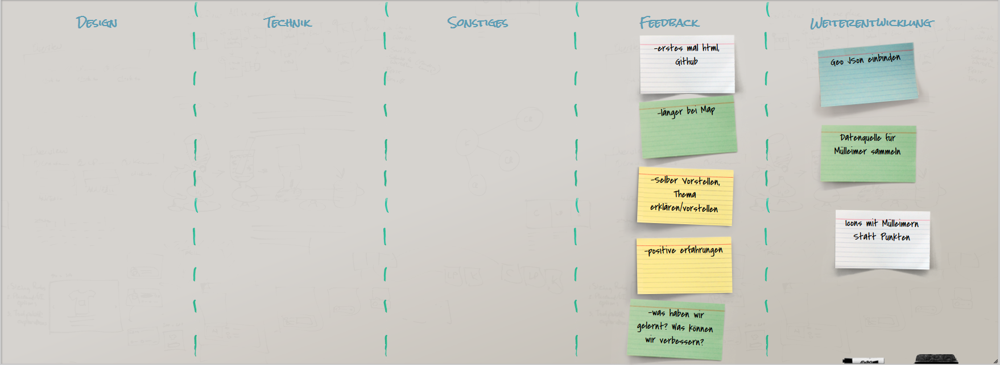
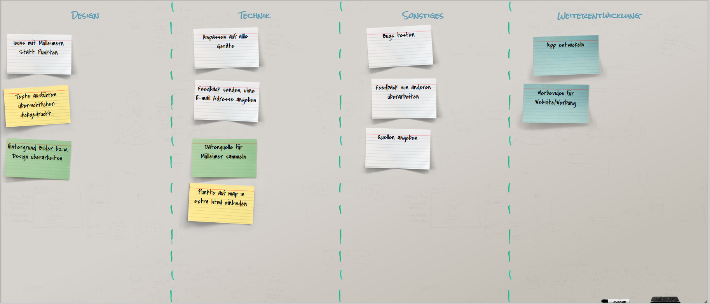

Weitere Informationen
Wir haben uns gedacht das es uns in der Stadt nervt das überall Müll rumliegt und wieso das so ist. Wir sind auf den Entschluss gekommen
das vieleicht viele Menschen gerne den Müll wegschmeißen wollen doch keinen Mülleimer finden. Also haben wir eine Website entwickelt,
wo man sehen kann wo der nächste Mülleimer steht. Man kann natürlich auch sehen wo größere Müllabladestellen sind, zb. für Schrott.
Wen man auf einen Mülleimer tippt, erscheint ein Feld wo steht wo der Mülleimer steht und was man dort herreinwerfen kann. Da dies noch
in einer frühen Entwicklungsphase ist bitten wir sie Fehler zu entschuldigen.
Arbeitschritte


